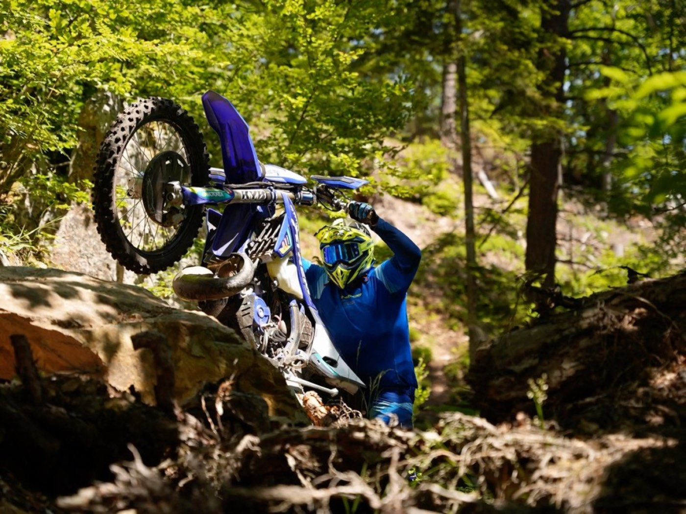
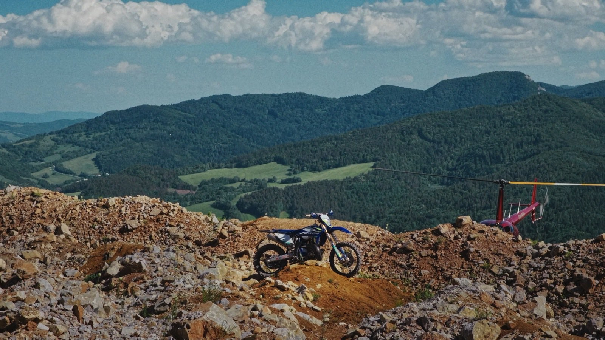
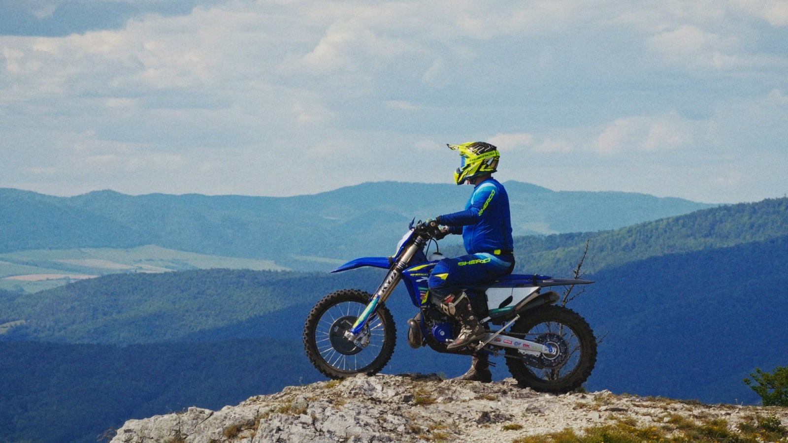

Day 1 13. May

- 3
- Days
- 99
- Kilometres
- 5
- Classes
13.–15. May 2027 Pozostene, Slovakia
No mercy, no pavement
Hard Enduro Slovakia
13.–15. May 2027 Pozostene, SK
99 km of pure hard enduro

Track presentation
Course footage, 2026 recon
Mountain and forest, from the valley floor to the ridge. What follows is the whole of it — there is nothing here that is not on the course.
- Length
- 99 km
- Location
- Mountains and forest
- Terrain
- Rock, river crossings, loose scree



Schedule
Three days, 13.–15. May 2027
Day 2 14. May
Main race
Day 3 15. May
Main race
Classes & rules
AGold / Master-Pro
BSilver / Hobby
CBronze / Amateur
VVeteran
SSuper veteran
Not decided
Prize money and the points system are still being settled. Nothing is announced until it is signed off.
Register now
Entry form → Stripe checkout
Entries not open yetPast editions
2026Photos to come
2025Photos to come
2024Photos to come
2023Photos to come
Partners
Logo
Logo
Logo
Logo
Logo